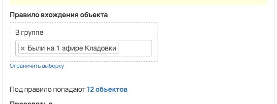
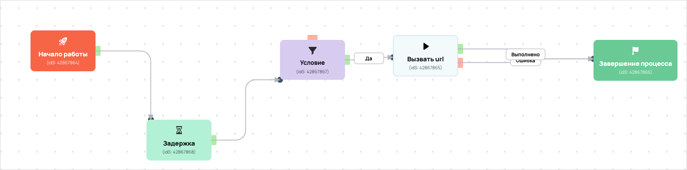

[AMO] [ED] Запуск_Клад_12.05 день 1 повтор 100586
- ID процесса:
2462210 - Объект: Пользователи
- Статус: Стартовал
- Внутренняя страница: 2462210. [AMO] [ED] Запуск_Клад_12.05 день 1 повтор 100586
- GetCourse: Карточка | Схема процесса
Скриншоты процесса


Коротко для заказчика
- Главное: В процесс попадают пользователи по правилу: В группе (ID: 4799164)..
- Дальше он передает данные как: Формы и анкеты.
- Связанных баз Vakas: 1.
Понятное описание процесса
- Процесс работает с объектом GetCourse: Пользователи. Текущий статус процесса: Стартовал.
- На вход попадают данные так: В процесс попадают пользователи по правилу: В группе (ID: 4799164)..
- Дополнительные условия внутри схемы не извлечены: процесс идет напрямую по основной ветке или условия не подписаны.
- Дальше процесс делает прямые вызовы Vakas: 1. Напрямую задействованы базы: 100586.
- Передача: 100586. База 100586: Формы и анкеты. Передаются параметры:
name,email,phone,getcourse_user_id,utm_source,utm_medium,utm_campaign,utm_content,utm_term,commentsи другие. - Что происходит в amoCRM: На входе в этап ОТДЕЛ - ДОВЕДЕНИЯ -> ПОСМОТРЕЛИ ВЕБИНАР 1 [57387586] база ищет дубль и при необходимости переводит найденную сделку в рабочий этап.
Ход процесса в GetCourse
- Схема состоит из 2 блоков и 1 переходов.
- По типам: стартов 1, условий/ожиданий 0, вызовов URL 0, изменений полей 0, финалов 0.
Блоки процесса: что делают и зачем нужны:
- Блок
1«Начало работы» (старт). Что делает: Запускает выполнение схемы для объекта, который попал под правило входа процесса. Зачем нужен: Нужен как точка входа: от него GetCourse начинает движение объекта по схеме. Дальше: если результат «Выполнено», идет в «Вызвать url». - Блок
2«Вызвать url» (операция request). Что делает: Выполняет служебный шаг схемы «Вызвать url». Зачем нужен: Нужен как промежуточный технический шаг в схеме «Вызвать url». Дальше переходов нет: это конечная точка ветки.
Что именно входит в процесс
- В процесс попадают пользователи по правилу: В группе (ID: 4799164)..
Как именно настроено правило
- В amoCRM процесс ориентирован на воронки: «Отдел Доведения, Этап Посмотрели вебинар 1».
- Название сделки в amo: «Запуск_Клад_12.05».
- Тег сделки в amo: «Запуск_Клад_12.05».
Куда и как передается дальше
| База Vakas | Что передается | Этап в amoCRM | Что происходит со сделкой |
|---|---|---|---|
| 100586. База 100586 | Формы и анкеты | ОТДЕЛ - ДОВЕДЕНИЯ -> ПОСМОТРЕЛИ ВЕБИНАР 1 [57387586] | На входе в этап ОТДЕЛ - ДОВЕДЕНИЯ -> ПОСМОТРЕЛИ ВЕБИНАР 1 [57387586] база ищет дубль и при необходимости переводит найденную сделку в рабочий этап. |